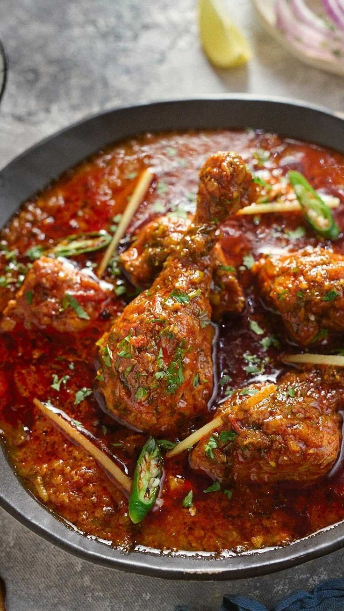

This is a really good recipe for spicy Indian chicken curry. It's pretty easy to make and tastes better than takeout! Serve over basmati rice or with warm naan bread to soak up the sauce.
Gather all ingridient
Sprinkle the chicken breasts with 2 teaspoons salt. Heat 1 to 2 tablespoons oil in a large skillet over high heat. Brown chicken in batches, adding more oil as needed, until partially cooked and golden on all sides. Transfer browned chicken breasts to a plate and set aside.
Reduce the heat to medium and add onion, garlic, and ginger to the oil remaining in the skillet. Cook and stir until onion turns soft and translucent, 5 to 8 minutes. Stir curry powder, cumin, turmeric, coriander, cayenne, and 1 tablespoon of water into the onion mixture; allow to heat together for about 1 minute while stirring.
Add tomatoes, yogurt, 1 tablespoon chopped cilantro, and 1 teaspoon salt to the mixture; stir to combine.
Return chicken breast to the skillet along with any juices on the plate. Pour in 1/2 cup water and bring to a boil, turning the chicken to coat with the sauce. Sprinkle garam masala and 1 tablespoon cilantro over the chicken.
Cover the skillet and simmer until chicken breasts are no longer pink in the center and the juices run clear, about 20 minutes. An instant-read thermometer inserted into the center should read at least 165 degrees F (74 degrees C).
Drizzle with lemon juice to serve. Enjoy!